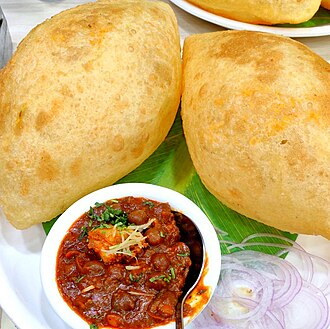

Home
Chole Bature

Chole bhature is a food dish popular in the northern areas of the Indian subcontinent.
It is a combination of chana masala and bhatura/puri, a deep-fried bread made from maida.
Chole bhature is often eaten as a breakfast dish, sometimes accompanied with lassi.
Ingredients
- Chickpeas: 1 cup, dried and soaked overnight
- Water: 3 cups for cooking the chickpeas.
- Tea bag: 1, for a richer color
- Baking soda: A small pinch, for tender chickpeas
- All-purpose flour: 2 cups
Steps
- Soak and Pressure Cook Chickpeas
- Then drain the water
- add the chickpeas. Also add 3 cups water and ¼ teaspoon salt
- Pressure cook chickpeas for 10 to 12 whistles
- Make Onion Tomato Masala
- Make Chana Curry